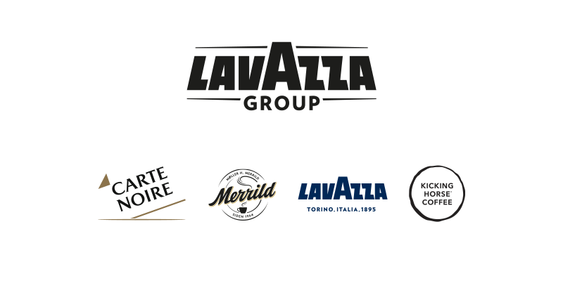

IL NOSTRO IMPEGNO PER LE PERSONE
Occupazione
Questo dato riassume le dimensioni del Gruppo e introduce il tema delle persone come risorsa centrale dell’attività aziendale.
Stabilità del lavoro
La grande maggioranza delle persone del Gruppo ha un contratto stabile, in linea con una strategia orientata al lungo periodo.
Formazione e D&I
Nel 2024 sono state erogate oltre 4.000 ore di formazione dedicate a diversità, inclusione e sostenibilità, anche tramite la Sustainability Academy e l’Ambassador Programme.
UNA CRESCITA RESPONSABILE
Creazione di valore
Il Gruppo collega la crescita economica a una gestione responsabile del business, integrando i temi di sostenibilità nelle decisioni strategiche.
Distribuzione agli stakeholder
La maggior parte del valore creato viene redistribuito a dipendenti, fornitori, comunità, azionisti e partner, secondo un modello di sviluppo condiviso.
Filiera e diritti umani
La catena di fornitura è monitorata tramite partnership multistakeholder, medaglia d’oro EcoVadis, audit etico-sociali e iniziative a tutela dei diritti umani, con oltre 6.000 beneficiari in Vietnam.
LA TUTELA DELL’AMBIENTE E DELLE RISORSE NATURALI
Decarbonizzazione
La strategia di decarbonizzazione si basa sulla Roadmap to Zero e su un inventario delle emissioni GHG certificato secondo la norma ISO 14064-1.
Riduzione delle emissioni
La riduzione delle emissioni rispetto all’anno precedente deriva da interventi di efficientamento energetico e da azioni mirate lungo la catena del valore.
Circolarità delle risorse
Nel 2024 l’87% dei rifiuti è stato recuperato o riciclato e il 98% degli scarti vegetali è stato trasformato in fertilizzante o biogas in Italia. Il Gruppo partecipa al Center for Circular Economy in Coffee e sostiene progetti di agricoltura rigenerativa.
L’IMPEGNO PER LE COMUNITÀ LOCALI
Community Care
Il programma di Community Care è esteso a livello globale e attivo in 6 Paesi, con 8 progetti in Italia realizzati insieme a istituzioni e organizzazioni non governative.
Lavazza Volunteer Program
Il Volunteer Program, rivolto ai dipendenti degli stabilimenti, ha totalizzato oltre 750 ore di attività e coinvolto 15 associazioni locali.
Fondazione Lavazza
La Fondazione promuove 29 progetti di agricoltura sostenibile e inclusione sociale in 18 Paesi produttori di caffè, distribuiti su 3 continenti, con anche il programma A Cup of Learning che ha formato oltre 700 giovani in 20 Paesi.
Report di sostenibilità
Questa pagina offre una sintesi del Bilancio di Sostenibilità 2024 del Gruppo Lavazza. Per i dati completi è possibile consultare il documento ufficiale.
